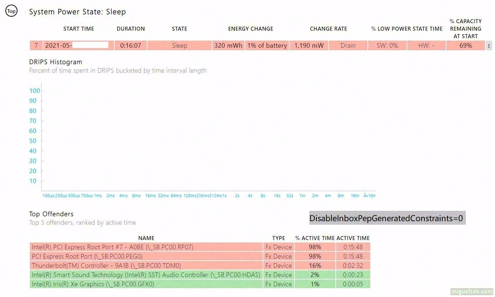
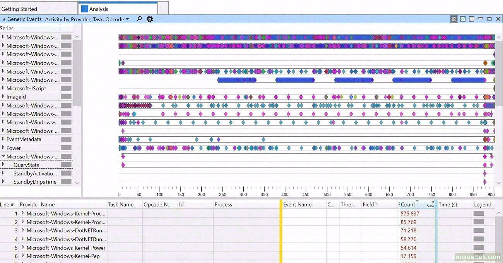
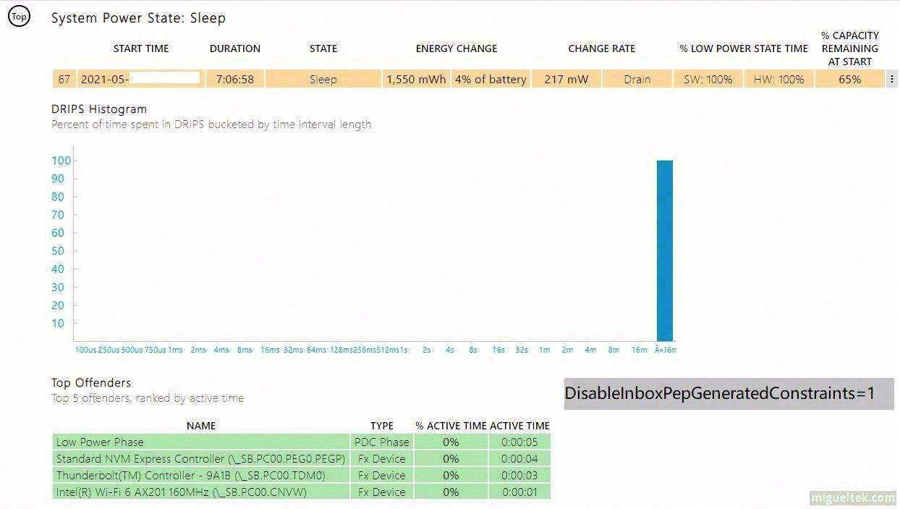
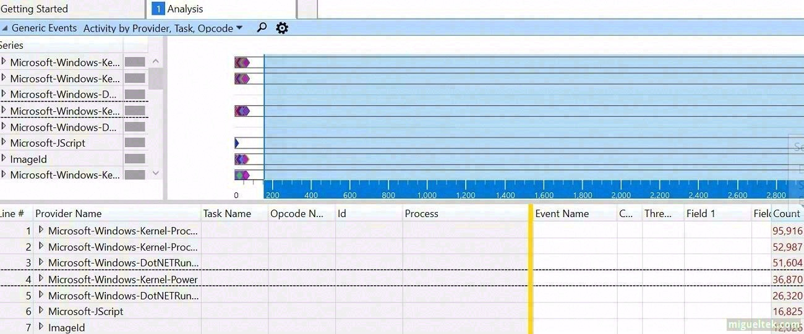
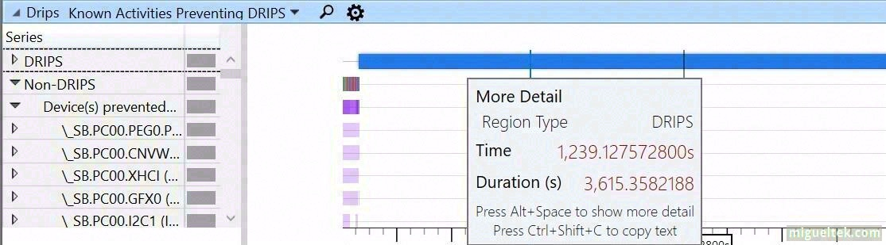

重装 Windows 系统后连接待机/现代待机设备无法进入 DRIPS 的处理(DisableInboxPepGeneratedConstraints)
给新购买的 Yoga Duet 平板重装系统后, 发现平板睡眠时无法进入 DRIPS, 导致睡眠功耗异常高, 且睡眠唤醒过程时常蓝屏, 而 OEM 的系统就一切正常, 见鬼!
最终在 OEM 的系统中发现了一处特殊的设置, 才算成功解救一直炸裂的睡眠.
TL;DR /太长不看
如果你也遇到的类似的问题, 可以尝试导入下面的注册表后重启试试看睡眠功耗正常没有. 若无效, 建议打开注册表编辑器删除 DisableInboxPepGeneratedConstraints 或者设置值为 0 来还原.
OEM 系统中, 可能会在注册表中设置以下的值:
Windows Registry Editor Version 5.00
[HKEY_LOCAL_MACHINE\SYSTEM\CurrentControlSet\Control\Power]
"DisableInboxPepGeneratedConstraints"=dword:00000001
点击此处下载 DisableInboxPepGeneratedConstraints.reg 注册表文件, 可直接导入测试.
我没有在微软官方网站找到文档解释此注册表设置的影响, 但 OEM 的系统设置了此键, 因此平板可以正常进入 DRIPS.
不正常的睡眠
设备是 S0ix 现代待机(即之前的连接待机), 嫌弃原装系统重装后噩梦开始, 平板一直不正常, 基本无法舒心使用, 遇到了这些情况:
- 睡眠或者唤醒中容易蓝屏死机. (OEM 系统无此问题)
- 睡眠功耗过高, 睡眠中电池消耗速度过快.
- 经过简单分析, 发现设备无法进入 DRIPS, 睡眠过程中一直有活动.
powercfg /sleepstudy报告显示存储设备在睡眠过程中一直唤醒.- 设置现代待机中网络断开无任何帮助.
微软官方文档介绍可以使用 Windows Performance Analyzer 工具诊断现代待机睡眠问题, 但我不会使用 Windows Performance Analyzer, 只能看出计算机没有进入 DRIPS 状态.
这是异常的
powercfg /sleepstudy报告:

可以看到, 睡眠功耗高达 1.2W, 不到 3 小时就可能因为电池消耗过快而自动转入休眠 (默认情况下, 睡眠耗电超过 5% 即转入休眠).
这是异常的 WPA 记录的日志, 我不会用 WPA, 但晃眼可以看出, 整个睡眠过程中, 平板一直保持活动 (不是维护/更新等后台导致的活动)

设置 DisableInboxPepGeneratedConstraints 后的变化
设置
DisableInboxPepGeneratedConstraints =1重启后,sleepstudy可以看出设备正常睡眠, 能进入 DRIPS.

1.2W vs 0.2W 的睡眠功耗, 相差可以说很大了, 0.2W 是比较优秀的情况, 极端情况下, 也是 1.5W vs 0.5W (比较少见).
WPA 报告中, 也可见设备睡眠过程中, 几乎无活动了, 也能进入 DRIPS 了.


后续观察
微软原版 ISO 重装 + 设置 DisableInboxPepGeneratedConstraints =1 后, 我已经用了 2 个多月了, 平板没有出现过任何蓝屏问题, 现代待机睡眠也变得正常, 当然, 相对于 S3 待机, 耗电还是有点大, 但我已经完全能接受.
根据 powercfg /sleepstudy 报告分析, 大部分情况下, 待机 24 小时耗电不到 20%, 也就是说, 每小时耗电不到 1% (大部分情况下每小时 0.7% 左右), 偶尔偏高, 但不影响.